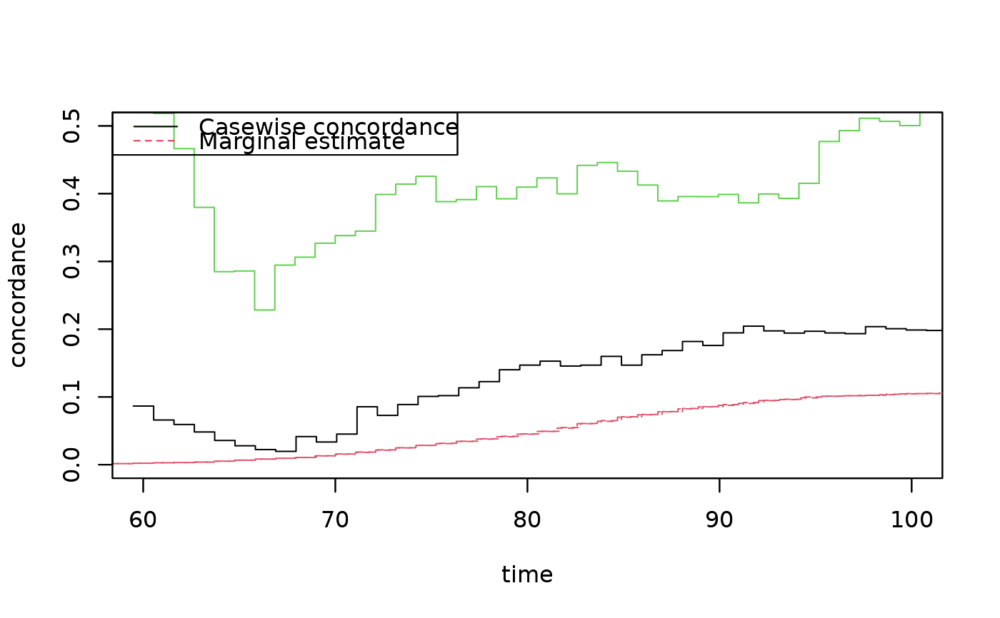

R/casewise.R
casewise.Rd.. content for description (no empty lines) ..
casewise(conc, marg, cause.marg)
| conc | Concordance |
|---|---|
| marg | Marginal estimate |
| cause.marg | specififes which cause that should be used for marginal cif based on prodlim |
Thomas Scheike
## Reduce Ex.Timings library(prodlim) data(prt); ### marginal cumulative incidence of prostate cancer##' outm <- prodlim(Hist(time,status)~+1,data=prt) times <- 60:100 cifmz <- predict(outm,cause=2,time=times,newdata=data.frame(zyg="MZ")) ## cause is 2 (second cause) cifdz <- predict(outm,cause=2,time=times,newdata=data.frame(zyg="DZ")) ### concordance for MZ and DZ twins cc <- bicomprisk(Event(time,status)~strata(zyg)+id(id),data=prt,cause=c(2,2),prodlim=TRUE)#>#>cdz <- cc$model$"DZ" cmz <- cc$model$"MZ" cdz <- casewise(cdz,outm,cause.marg=2) cmz <- casewise(cmz,outm,cause.marg=2) plot(cmz,ci=NULL,ylim=c(0,0.5),xlim=c(60,100),legend=TRUE,col=c(3,2,1))summary(cdz)#> Casewise concordance and standard errors #> time casewise conc se casewise #> [1,] 59.6 0.0810 0.0810 #> [2,] 60.7 0.0627 0.0627 #> [3,] 61.7 0.0546 0.0546 #> [4,] 62.8 0.0467 0.0466 #> [5,] 63.8 0.0329 0.0329 #> [6,] 64.9 0.0267 0.0267 #> [7,] 66.0 0.0216 0.0216 #> [8,] 67.0 0.0187 0.0187 #> [9,] 68.1 0.0372 0.0265 #> [10,] 69.1 0.0308 0.0220 #> [11,] 70.2 0.0401 0.0234 #> [12,] 71.2 0.0751 0.0309 #> [13,] 72.3 0.0642 0.0264 #> [14,] 73.3 0.0783 0.0279 #> [15,] 74.4 0.0897 0.0286 #> [16,] 75.5 0.0887 0.0269 #> [17,] 76.5 0.0994 0.0278 #> [18,] 77.6 0.1070 0.0280 #> [19,] 78.6 0.1310 0.0305 #> [20,] 79.7 0.1300 0.0294 #> [21,] 80.7 0.1350 0.0290 #> [22,] 81.8 0.1280 0.0271 #> [23,] 82.8 0.1310 0.0266 #> [24,] 83.9 0.1420 0.0273 #> [25,] 85.0 0.1310 0.0252 #> [26,] 86.0 0.1440 0.0264 #> [27,] 87.1 0.1500 0.0268 #> [28,] 88.1 0.1620 0.0279 #> [29,] 89.2 0.1560 0.0268 #> [30,] 90.2 0.1730 0.0287 #> [31,] 91.3 0.1820 0.0296 #> [32,] 92.3 0.1750 0.0285 #> [33,] 93.4 0.1720 0.0280 #> [34,] 94.5 0.1740 0.0282 #> [35,] 95.5 0.1710 0.0276 #> [36,] 96.6 0.1700 0.0275 #> [37,] 97.6 0.1810 0.0295 #> [38,] 98.7 0.1770 0.0290 #> [39,] 99.7 0.1760 0.0287 #> [40,] 101.0 0.1750 0.0286 #> [41,] 102.0 0.1730 0.0282 #> [42,] 103.0 0.1710 0.0279 #> [43,] 104.0 0.1710 0.0279 #> [44,] 105.0 0.1700 0.0278 #> [45,] 106.0 0.1690 0.0276 #> [46,] 107.0 0.1690 0.0276 #> [47,] 108.0 0.1680 0.0274 #> #>summary(cmz)#> Casewise concordance and standard errors #> time casewise conc se casewise #> [1,] 59.8 0.152 0.1520 #> [2,] 60.9 0.468 0.2340 #> [3,] 62.0 0.409 0.2040 #> [4,] 63.1 0.325 0.1620 #> [5,] 64.2 0.231 0.1150 #> [6,] 65.4 0.240 0.1070 #> [7,] 66.5 0.290 0.1100 #> [8,] 67.6 0.296 0.1050 #> [9,] 68.7 0.314 0.0995 #> [10,] 69.8 0.318 0.0921 #> [11,] 70.9 0.318 0.0853 #> [12,] 72.0 0.338 0.0825 #> [13,] 73.2 0.374 0.0820 #> [14,] 74.3 0.384 0.0788 #> [15,] 75.4 0.342 0.0702 #> [16,] 76.5 0.361 0.0702 #> [17,] 77.6 0.361 0.0676 #> [18,] 78.7 0.357 0.0649 #> [19,] 79.8 0.356 0.0628 #> [20,] 81.0 0.373 0.0630 #> [21,] 82.1 0.383 0.0616 #> [22,] 83.2 0.402 0.0618 #> [23,] 84.3 0.401 0.0603 #> [24,] 85.4 0.385 0.0573 #> [25,] 86.5 0.358 0.0534 #> [26,] 87.6 0.364 0.0534 #> [27,] 88.8 0.362 0.0527 #> [28,] 89.9 0.364 0.0525 #> [29,] 91.0 0.352 0.0509 #> [30,] 92.1 0.363 0.0519 #> [31,] 93.2 0.354 0.0507 #> [32,] 94.3 0.386 0.0549 #> [33,] 95.4 0.427 0.0602 #> [34,] 96.6 0.443 0.0622 #> [35,] 97.7 0.460 0.0646 #> [36,] 98.8 0.452 0.0635 #> [37,] 99.9 0.470 0.0663 #> [38,] 101.0 0.469 0.0661 #> [39,] 102.0 0.462 0.0651 #> [40,] 103.0 0.484 0.0694 #> [41,] 104.0 0.484 0.0694 #> [42,] 105.0 0.479 0.0687 #> [43,] 107.0 0.479 0.0687 #> [44,] 108.0 0.476 0.0683 #> [45,] 109.0 0.476 0.0683 #> [46,] 110.0 0.476 0.0683 #> [47,] 111.0 0.476 0.0683 #> #>